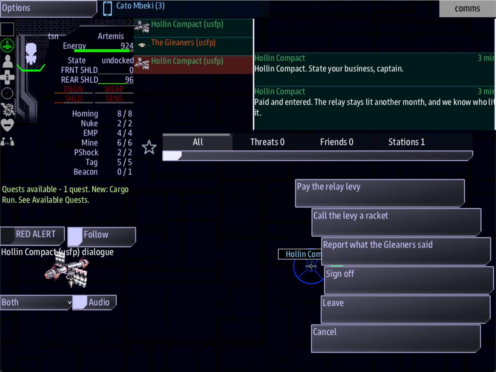

Class 6, Lecture 2 - What the game remembers¶
What you will have at the end¶
A campaign that remembers one more kind of thing than it did in Lecture 1: what the crew knows. The crew will learn one fact by finishing a lead and another by asking a question in a hail. The Compact will have an answer on offer only for a crew that knows the first fact, and will say a different line to a crew that knows both. You will close the game, start it again, and find that the crew still knows.
You will also have the whole list of what the save keeps, a look inside the save file, and a second campaign in a slot of its own.

The Hollin hail, with "Report what the Gleaners said" among the answers: the game remembered.You add three lines and two records to kestrel_verge.amd. Then you play one short
evening, stop, and come back.
The video¶
About 5 minutes. Subtitles are available in the player.
Before you start¶
- Your
MyUniversemission as Lecture 1 left it:campaign.md, and akestrel_verge.amdwith The Wren and One of Five in it. The files are inc6-01-from-one-session-to-twenty\example\. sbs lint MyUniversesaysclean.- The game closed, and the save deleted:
C:\Cosmos\data\missions\common_data\saves\universe_save_the_kestrel_verge_1.yaml.
This lecture was written after Lectures 3 to 10. If you have already taken some of them, do this one on the file you have now. Everything it adds sits beside what they add: the whole of Act One was walked again with these lines in the file, and every step of it went as those pages say.
Words for this lecture:
| Word | Meaning |
|---|---|
| Save | The file the game writes as the crew plays. It is what Continue reads |
| Slot | A number from 1 to 6. Each slot is a separate campaign in a file of its own |
| Fact | A few plain words the crew has learned. The game keeps them between evenings |
| Guard | A condition on a line or an answer. You met standing >= 20 in Class 5 |
Step 1 - What a fact is¶
In Lecture 1 the game remembered steps, standing and credits. "The crew lied to the Assay Office" was kept only as the standing it cost. There is now a plain way to keep it.
A fact is a few words you choose: the gleaners broke a boat. The crew either knows it
or does not. You write it in two places: once where the crew learns it, and once
wherever the story asks whether they know.
| You write | Where | It means |
|---|---|---|
; learn the gleaners broke a boat |
After an answer in a hail | A crew that gives this answer now knows it |
Then: learn the gleaners broke a boat |
In the fence of a step | A crew that finishes this step now knows it |
if learned the gleaners broke a boat |
After an answer | Offer this answer only to a crew that knows it |
%{learned the gleaners broke a boat} |
In front of a line | Say this line only to a crew that knows it |
%{learned the gleaners broke a boat < 1} |
In front of a line | Say this line only to a crew that does not |
A fact belongs to the whole game, not to one ship. It moves nobody's standing. And it is in the save.
Step 2 - A fact learned by finishing a step¶
Open kestrel_verge.amd. In the Narrative chapter find ### [The Second Colony](lead_deepwell).
It is one of your Class 5 leads. Add one line to its fence, under Done when:.
### [The Second Colony](lead_deepwell)
---
Scope: shared
Starts when: at once
Done when: reach 3, 1
Then: learn the assay office buys salvage
---
The Deepwell Assembly keeps its books at (3, 1). Go and be counted.
Then: can do more than one thing. Put a comma between them, as you do after the
; on an answer: Then: reveal lead_tern, learn the assay office buys salvage. Or
write a second Then: line under the first. Either way both happen, in the order you
wrote them. So a step on your spine can keep its Then: reveal and teach a fact as
well. This lead only teaches, so it has one.
Step 3 - A fact learned in a hail¶
In the Dialogue chapter find ### [Gleaner Hail](gleaner_hail). Add one answer, above
- [Back away].
It leads to a record that is not there yet. Go to the end of the file, leave an empty line, and add it.
### [The Boats](gleaner_boats)
---
Speaker: gleaners
---
% Boats? One came through the yard. We broke her for the cells. Ask nicely and we may remember which.
learn goes where earns and costs go: after the ;, with a comma between it and
anything else there.
Step 4 - Asking what the crew knows¶
Now the Compact. Find ### [Hollin Hail](hollin_hail). Add one answer, above
- [Sign off].
And at the end of the file, with an empty line above it, the record it leads to.
### [The Report](hollin_report)
---
Speaker: hollin
---
%{learned the assay office buys salvage} Entered. And the Assay Office buys what the Gleaners break, captain. You have seen both ends of it now.
%{learned the assay office buys salvage < 1} Entered. One boat, broken for her cells. Find out who bought what was left of her.
| Line | What it does |
|---|---|
if learned the gleaners broke a boat |
The answer is not among the Compact's answers until the crew has asked the Gleaners |
%{learned the assay office buys salvage} |
Said to a crew that has been to the Assay Office |
%{learned the assay office buys salvage < 1} |
Said to a crew that has not. Write both lines. A line with no guard beside a guarded one can always be said, and the game picks between them by chance |
The finished file is in example\kestrel_verge.amd.
Step 5 - Check it¶
Save the file.
Lint reads facts. Once a file teaches anything at all, lint reports every learned that
nothing in the mission can make true. Each row below was made on purpose, one change to
the finished file, then linted, then played where the row says what the game does.
Mistakes lint finds
| The mistake | What the game does | What lint says |
|---|---|---|
The fact misspelled where it is asked for: if learned the gleaners broke a baot |
Not played | A warning: "asks for a fact called the gleaners broke a baot, and nothing in this file says ; learn the gleaners broke a baot ... As written this choice is never offered" (guard-learned-unknown). It lists the facts the file does teach |
The fact misspelled where it is learned: ; learn the gleaners broke a baot |
The crew learns the misspelled fact. The Compact's answer asks for the right one, and is never offered | The same warning, on the line that asks (guard-learned-unknown) |
The fact misspelled in a guard on a line, or after Then: learn |
Not played | The same warning (guard-learned-unknown) |
No ; in front of learn |
Not played | Two warnings: the one above, and "neither a condition (if ...) nor an outcome (after a ;), so it is ignored" (choice-tail-ignored) |
; learns the gleaners broke a boat |
Not played | Two warnings: the one above, and "learns is not an outcome verb" (unknown-outcome-verb) |
; learn, with no fact after it |
Not played | Two warnings: the one above, and "learn names no fact, so nothing is recorded" (learn-nothing) |
Then: learns the assay office buys salvage |
Not played | "learns is not a Then: verb ... Then: takes reveal or signal or learn" (unknown-then-verb), and three more that follow from it |
%{not learned the assay office buys salvage} for the second line |
Not played | A warning: "and, or and not are read as part of the name ... As written this line is never spoken" (guard-joined). Write < 1 |
A reputation trait bent into a fact: ; earns gleaners boat 1 and if boat >= 1 |
The score is kept, under the Gleaners. The Compact's answer asks about the Compact, finds nothing, and is never offered | A warning: "boat is not a trait a side can value, so no side's standing moves" (earns-unknown-trait) |
if learnt the gleaners broke a boat |
The answer is never offered, to anybody | A warning: "asks about the fact the gleaners broke a boat with the word learnt, and the game knows only learned ... As written this choice is never offered" (guard-learned-word) |
if knows the gleaners broke a boat |
The same | The same warning, about knows (guard-learned-word) |
The curly brackets left off: %learned the assay office buys salvage Entered. |
No guard. The Compact said the words out loud, to a crew that had not been to the Assay Office: "learned the assay office buys salvage Entered. And the Assay Office buys what the Gleaners break ..." | A warning: "has no curly brackets round it, so it is not a condition: the words learned the assay office buys salvage are spoken aloud, to everybody" (guard-no-braces) |
A mistake lint cannot see
Lint says clean for this one.
| The mistake | What the game does |
|---|---|
The second line of The Report with no guard: % Entered. One boat ... |
A crew that knows only the first fact hears it, as it should. For a crew that knows both, two lines can now be said. Class 5 Lecture 4 measured what the game does then: it picks one by chance. That part was not played again here |
Three things that look wrong and are not. Lint says clean for each:
| You wrote | What the game does |
|---|---|
if learned The Gleaners Broke A Boat, with capitals |
Works. The answer was offered after the crew learned the fact as you wrote it, in small letters |
A second Then: line in one fence: Then: reveal lead_tern and, under it, Then: learn the assay office buys salvage |
Both happen. On arrival The Third Colony was revealed and the fact was learned |
Both on one line with a comma: Then: reveal lead_tern, learn the assay office buys salvage |
The same: revealed, and learned |
So check by eye: a guarded line has a partner guarded the other way.
Step 6 - Play, stop, and come back¶
- In the
commswindow, select the Hollin Compact's station and press Hail Hollin Compact. There are three answers, and Report what the Gleaners said is not one of them. Press Pay the relay levy, select the station again, and take the Escort. - In the
helmwindow, open the Quest Log and engage The Breaking Yard. At the Gleaners' home, on Comms, select their station and press Hail The Gleaners. There are three answers. Press Ask what became of the Tern's boats. They say: "Boats? One came through the yard. We broke her for the cells. Ask nicely and we may remember which." - In the Quest Log, under Charted Locations, engage Kestrel Relay. Hail the Compact. Report what the Gleaners said is among the answers now. Press it. They say: "Entered. One boat, broken for her cells. Find out who bought what was left of her."
- Engage The Second Colony. On arrival at (3, 1) the lead is done, the Escort pays, and the crew has learned the second fact. Nothing on the screen says so. A fact is silent until a line or an answer asks for it.
- Engage Kestrel Relay and report again. This time: "Entered. And the Assay Office buys what the Gleaners break, captain. You have seen both ends of it now."
- Close every window of the game.
- Type the same
sbs runline. The game continues. - Hail the Compact. Report what the Gleaners said is still there, and the line is still the second one. The crew still knows both facts.
What was measured, on the finished files of this lecture:
| What I checked | Before I stopped | After Continue |
|---|---|---|
| Where the ship is | Kestrel Relay, (0, 0) | The same |
| Credits | 700 | 700 |
| Standing with Hollin | 25 | 25 |
The crew knows the gleaners broke a boat |
Yes | Yes |
The crew knows the assay office buys salvage |
Yes | Yes |
| The Compact's answers | Four, with Report what the Gleaners said | The same four |
The crew cannot go back to the Gleaners' home from the Quest Log once The Breaking Yard is done: a side's home is not a Charted Location. That is why the answer that asks for the fact is at Kestrel Relay, where the crew can always return.
Step 7 - Read the save¶
Close the game. In File Explorer go to C:\Cosmos\data\missions\common_data\saves and
open universe_save_the_kestrel_verge_1.yaml in VS Code. Do not change it.
The last five lines are what the crew knows:
Above them, under shared_quests:, is every step of your story. A step is five lines:
state: |
The step is |
|---|---|
1 |
Open. The crew can see it |
2 |
Hidden, waiting to be revealed |
99 |
Done |
98 |
Failed |
There is no title there, and no text. The save holds the key of each step and how far
the crew has got with it. The words are in your file, and only in your file. Search the
save for The Long Count: it is not there. That matters twice. The save is not a
spoiler. And when you change a step's words between evenings, the crew sees the new
words. Lecture 9 is built on that.
A job is different. A job the ship has taken is in the save whole, title and all, under the ship: the game made that job up, and your file cannot make it again.
Step 8 - The whole list¶
Every row was measured by stopping a game and continuing it, on the released game. Where a row needed something this lecture's file does not have, a clock or a second ship or a winning step, it was added to a copy for the measurement and is not in your file.
| The game keeps | What was measured |
|---|---|
| The system the ship is in | Stopped at Kestrel Relay, continued at Kestrel Relay |
| The side's credits | 700 and 700 |
| Each ship's standing with each side | 25 and 25 |
| Every step of the story: open, hidden, done or failed | Each step had the same state after Continue |
| A step that failed, and what it cost | A step failed when its clock ran out, and its 50 credit penalty was taken. Both were in the save within seconds, with no jump after them |
| A clock that is running | A step with 258 seconds left when the game was closed came back with 275. The game writes a running clock down every half minute, so a clock can gain that much |
| Jobs in hand | The Escort was Active before and after |
| Charted Locations | The same list |
| What the crew has learned | Both facts |
| A ship's record, when the ship is renamed | Artemis was renamed Kittiwake in settings.yaml between two launches, with a second ship in the game. Kittiwake had Artemis's standing of 20 and her Escort |
| That the campaign was won | See Step 10 |
| The game does not keep | What to do about it |
|---|---|
| A fleet that was not destroyed. Three ships guarding a landmark were there again after Continue | Nothing. A crew that ran away finds the guards waiting |
The game, under a new title. With the title changed, the game started a new campaign in a new file, universe_save_the_kestrel_verge_ii_1.yaml. The old file was not touched |
Choose the title before evening 1 and never change it |
| A campaign in a slot where New Game is chosen. See Step 9 | Never choose New Game for a campaign in progress |
Three more are in the game's own guide and were not measured for this page: a hail the crew did not answer does not call again after Continue; ordinary loot in a ruin is there again on each visit; and a ship comes back at the edge of its system, not where it was inside it.
Two ships. Each ship comes back in its own system. With two ships in the game, the second was sent to (1, 0) and the game was closed. After Continue the first was at (0, 0) and the second at (1, 0).
Step 9 - Slots: two campaigns, one universe¶
The _1 at the end of the save's name is its slot. A universe has six. Each is a
campaign of its own, in a file of its own, and the game never mixes them.
The start screen has the choice. Start the game without map=0:
The server shows your mission's start screen. Beside Start, which reads Continue, is a dial called Save Slot, from 1 to 6. Set it to 2 and start the mission.
[Not seen on a screen by anybody: the dial. What was measured is the result: a game
started in slot 2 was a new campaign, it wrote
universe_save_the_kestrel_verge_2.yaml, and the first file was the same size
afterward.]
Use a slot when one universe has two crews: a Tuesday table and a Thursday table. Use one for yourself, so that walking your own story never touches the crew's save. Lecture 9 does exactly that.
New Game. The Start list's other choice replaces the campaign in the chosen
slot, and it does not ask. The game keeps the campaign it replaced, once, beside the
save: universe_save_the_kestrel_verge_1.yaml.previous.bak. To get it back, close the
game, delete the save, and take .previous.bak off the end of that file's name. A
second New Game replaces the kept copy too.
[Not tried: putting the kept copy back. What was measured is that the file was there, and was the size of the campaign that was replaced.]
If your start screen has no Save Slot. Your MyUniverse folder was made before the
dial was added. Nothing is wrong, and the game plays in slot 1. To add the dial, open
story.mast, find the line that begins Start:, and add this line under it, with the
same four spaces in front:
Step 10 - A campaign that was won¶
A step with Win: ends the game the evening it is finished. Class 5 Lecture 7 gave you
one. Lecture 1 of this class said a win can only happen once, and that is still true.
What has changed is what happens next.
A copy of this lecture's file was given a step with a Win: line, the step was
finished, and the game ended, won. Then the same game was started again.
| On the next Continue | What was measured |
|---|---|
| The game starts, and does not end | It was not over. The ship could jump |
| The crew is told once | One card, titled Campaign won: "This campaign has been won (Probe Win). The story is finished and the galaxy is still here - fly on." The words in brackets are the title of the step that won it |
| Everything else is as it was left | Credits, standing, jobs, the clock |
| Nothing ends the game again | The winning step is Done. It does not fire a second time |
So a finished campaign is not a dead save. The crew can come back to take jobs and fly the galaxy they saved. If your campaign should start again from the top, that is New Game.
What you need to know about the save
| Fact | What it means for your story |
|---|---|
| A fact is known or it is not | There is no "how much". For a number, use standing or credits |
| A fact is the whole game's | It is saved once, at the end of the file, and not under a ship. The game's guide says the same: what one crew learns, every crew knows |
| A fact is not unlearned | Lint's list of the words an answer can use has learn in it and nothing that takes a fact back. A door opened by a fact stays open |
Then: takes several things, with commas |
A step can reveal the next one and teach a fact. A spine step can do both |
| The save has no story text in it | It is safe to show a host, and your rewrites reach a campaign in progress |
| A slot is a campaign | Two tables, two slots. And one for your own walks |
If something goes wrong¶
| What you see | Likely cause |
|---|---|
| Report what the Gleaners said never appears | The words after learn and the words after if learned are not the same. Run lint: it names both |
| The Compact says the first-visit line after the crew has been to the Assay Office | The Then: learn line is not in The Second Colony's fence, or its words differ from the guard's |
| The Compact sometimes says one line and sometimes the other | One of the two lines in The Report has no guard |
The Compact says the words learned the assay office buys salvage out loud |
The curly brackets are missing from that line |
| The second start is a new game | The save was deleted, or the title changed, or the slot is not the one you played in |
| The game does not start, and the start screen says the saved game could not be loaded | The save file is damaged. This was measured with a save filled with nonsense: on Continue the game did not start, the file was byte for byte the same afterward, and a copy of it was beside it with .unreadable.bak on the end of its name. Put a good copy back under the save's own name (Lecture 8 has you keep one). Nobody has seen that screen, and New Game on the same slot, which the game's notes say still works, was not tried for this page |
| There is no Save Slot dial | Step 9, the last paragraph |
Exercise¶
- Write one fact of your own that the crew learns in a hail, and one they learn by finishing a step.
- Put an answer behind the first fact, at a station the crew can always return to.
- Give that answer's record two lines, guarded on the second fact both ways.
- Misspell the fact in one place, run lint, and read the warning. Put it right.
- Play it, stop, and continue. Fill in a table like the one in Step 6.
- Open the save and find your two facts.
- Start the game without
map=0, set the slot to 2, and start. Look in the saves folder for the second file. Then delete it.
Checkpoint¶
You are done when all five are true:
sbs lint MyUniversesaysclean.- An answer is offered only after the crew has learned a fact.
- A line changes when the crew has learned another.
- After Continue, both are still as they were.
- You can say, without looking, the two places a crew can learn a fact.
Next¶
Lecture 3 takes the lead you wrote in Lecture 1 and builds a whole evening around it. Nothing in it changes what you wrote today.
Further reading¶
- "What the game remembers" in the Open Universe writer's walkthrough: the same lists, and the game's own advice on changing a file between evenings.
- Lecture 9 of this class: changing a universe that a crew is halfway through.
- Class 5 Lecture 2: the save file, its name, and Continue.
- Class 5 Lecture 4: guards on
standing, which read the same way as guards on a fact.
Download this lecture's finished files (a zip of its example folder).